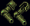

丰收（Harvest）元素附魔提升采集与开箱效率：提高有效采集 / 拆陷阱 / 开锁技能，有几率使采集产量或箱子战利品翻倍，并在成功采集或开箱后提供临时伤害减免。其元素特效「自然之鞭（Nature's Lash）」造成范围伤害并缠绕（Entangle）怪物。该元素仅通过成功采集与开启地牢 / 藏宝箱获得经验。
自然之鞭（Nature's Lash）是丰收元素的元素特效，由武器 / 魔法书触发（数值见对应章节）。其效果如下：
| 加成项 | 数值 |
|---|---|
| 近战命中加成 (Melee Accuracy Bonus) | 10% + 2% × 玩家丰收阶位 |
| 战术加成 (Tactics Bonus) | 10 + 2 × 玩家丰收阶位 |
| 元素特效触发几率 (Aspect Special Chance，随武器速度缩放) | 0.5% + 0.05% × 玩家丰收阶位 |
元素特效（Nature's Lash）：伤害 (800 + 80 × 阶位)，6 格半径分摊，缠绕 (3 + 0.3 × 阶位) 秒。
| 加成项 | 数值 |
|---|---|
| 法力返还几率 (Mana Refund Chance) | 10% + 2% × 玩家丰收阶位 |
| 伤害加成 (Damage Bonus) | 10% + 2% × 玩家丰收阶位 |
| 元素特效触发几率 (Aspect Special Chance，随法术环数缩放) | 4% + 0.4% × 玩家丰收阶位 |
元素特效（Nature's Lash）与武器相同：伤害 (800 + 80 × 阶位)，6 格半径分摊，缠绕 (3 + 0.3 × 阶位) 秒。

| 加成项 | 数值 |
|---|---|
| 护甲值加成 (Armor Rating Bonus) | 20% + 5% × 玩家丰收阶位 |
| 采集 / 开箱有效技能 (Effective Skill on Harvesting or Chests) | 3 + 1 × 玩家丰收阶位 |
| 采集或开箱双倍产量 / 战利品几率 (Chance at 2x Yield/Loot) | 6% + 2% × 玩家丰收阶位 |
| 采集 / 开箱成功后 60 秒伤害减免 (Damage Resist) | 3% + 1.2% × 玩家丰收阶位 |